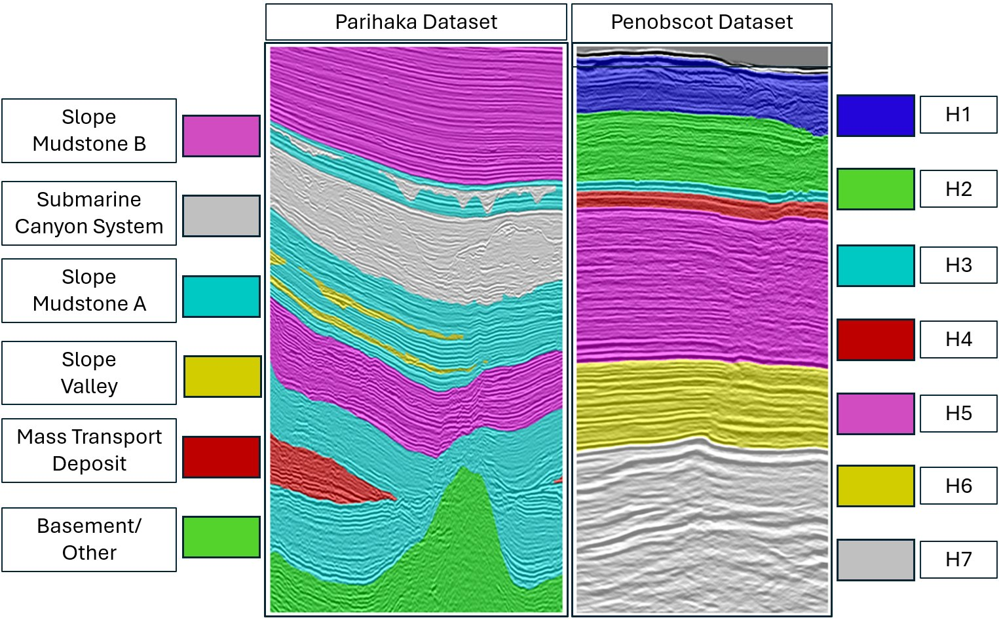
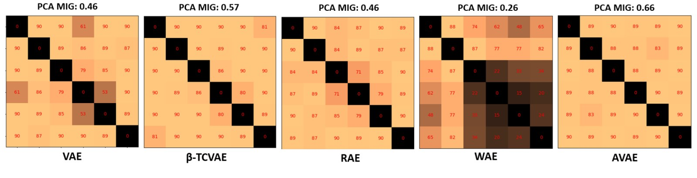
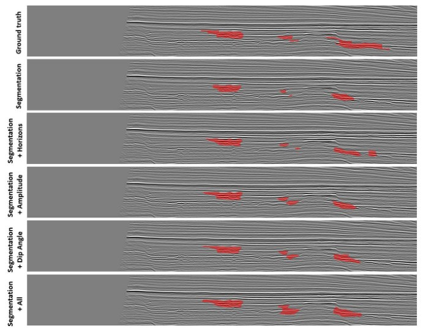
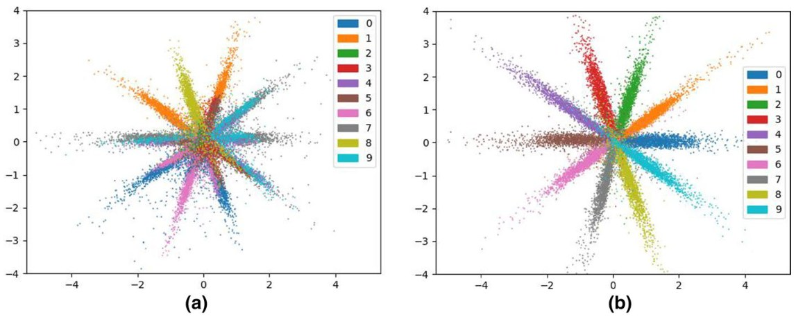
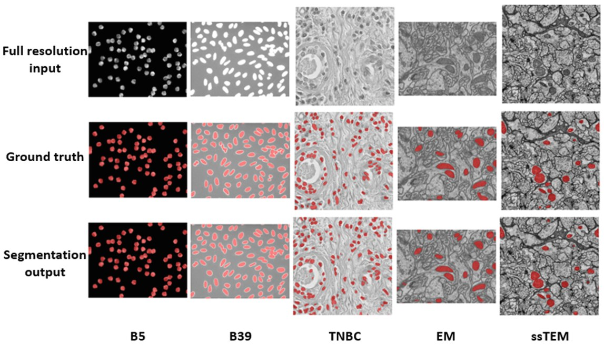

Applied Scientist II at Microsoft · PhD, University of Utah
I build enterprise LLM agents at Microsoft for supply chain operations, with a focus on
modular skill architectures, deployment across agent orchestrators, and evaluation-driven improvement.
My PhD at the Kahlert School of Computing, advised by
Prof. Ross Whitaker, developed
probabilistic deep learning methods: variational autoencoders with well-behaved latent spaces,
automatic relevance determination, and few-shot segmentation with Gaussian processes.
Before graduate school I spent nine years as a Scientific Officer in India's Department of Atomic Energy,
building Monte Carlo localization for mobile robots.
Build enterprise LLM agents for supply chain operations, deployed across Microsoft Copilot Studio and Copilot Cowork.
Redesign monolithic agent prompts into modular, reusable skills served through the Model Context Protocol (MCP), so one skill library works across orchestrators and customers can add their own workflows.
Drive evaluation-led iteration: analyze agent failures across frontier models and orchestrators, and benchmark skill-delivery designs for accuracy, latency, and tool-call efficiency.
Designed a statistical (non-LLM) scenario-synthesis pipeline for reproducible, controllable agent evaluation.
Nov 2024 – Feb 2026
Data Scientist
Microsoft
Bayesian uncertainty quantification and LP-based constrained optimization for long-term forecasting and capacity planning.
Developed a new approach that fuses demand and supply distributions for improved buffer optimization (patent submitted).
Aug 2021 – Oct 2024
Graduate Research Assistant
University of Utah · Advisor: Prof. Ross Whitaker
Deep latent variable models, representation learning, few-shot and multitask learning, and Gaussian processes. Collaborated with ExxonMobil on seismic image interpretation.
May – Aug 2021
CV/NLP PhD Intern
Ancestry · Mentor: Dr. Jack Reese
Regularization techniques for detecting paragraphs, tables, and other layouts in large-scale family-history book scans.
2009 – 2018
Scientific Officer
Department of Atomic Energy, Government of India
Accurate, robust, and efficient Monte Carlo localization for indoor mobile robots.
Education
2018 – 2024Ph.D., Computer Science University of Utah Dissertation: Deep Representation Learning for Statistical Analysis
2009 – 2012M.Tech., Computer Science Homi Bhabha National Institute, India
2005 – 2009B.Tech., Computer Science Maulana Abul Kalam Azad University of Technology, India
Awards
2022Best Paper Award, MICCAI Workshop on Medical Optical Imaging and Virtual Microscopy Image Analysis
2025Oral presentation, WACV
2024Oral presentation, ICPR
Part of PhD supported by the National Institutes of Health (R01ES032810)
My research develops probabilistic methods that make deep models more reliable with limited data: latent spaces that match their intended distributions, priors that discover how many dimensions a dataset needs, and segmentation models that adapt to new domains from a handful of labeled examples. I also collaborated with researchers from ExxonMobil on interpreting seismic images.
ARD-VAE: A Statistical Formulation to Find the Relevant Latent Dimensions of Variational Autoencoders
Surojit Saha, Sarang Joshi, Ross Whitaker
IEEE/CVF Winter Conference on Applications of Computer Vision (WACV), 2025 Oral
Latent traversals on 3D Shapes. Each relevant axis found by ARD-VAE controls one generative factor; traversing the irrelevant axes (red box) leaves the output unchanged.
Discovers the relevant latent axes of a VAE using a hierarchical (automatic relevance determination) prior, without modifying the ELBO.
Insensitive to the choice of autoencoder architecture and optimization strategy: no trainable masks, no L0 penalty, and no extra hyperparameters.
Starts from a generous latent size and prunes it down; on synthetic data with six known factors it recovers about six active dimensions.
Gives the best or near-best FID, precision–recall, and disentanglement (MIG) on real and synthetic datasets.
AdaSemSeg: An Adaptive Few-shot Semantic Segmentation of Seismic Facies
Surojit Saha, Ross Whitaker
IEEE Transactions on Geoscience and Remote Sensing (TGRS), 2025
The goal: from five annotated slices of a survey never seen in training, predict the facies of a new query slice, without fine-tuning.

The challenge: surveys differ in the number and naming of facies. Parihaka has six, Penobscot has seven, so a fixed-class model can't move between them.
An adaptive few-shot segmentation method for seismic facies that handles a different number of facies in each dataset, with no change to the architecture.
Generalizes to unseen seismic surveys from a handful of annotated slices, without fine-tuning on the target survey.
Initializing the image encoder with contrastive learning (SimCLR) on unlabeled seismic data substantially improves performance.
Comprehensively outperforms a prototype-based few-shot method and a segmentation model trained with transfer learning.
Disentanglement Analysis in Deep Latent Variable Models Matching Aggregate Posterior Distributions
Surojit Saha, Sarang Joshi, Ross Whitaker
IEEE International Conference on Acoustics, Speech and Signal Processing (ICASSP), 2025
Latent traversals on 3D Shapes for the AVAE (left) and β-TCVAE (right).
Models that match the aggregate posterior to an isotropic Gaussian (AVAE, AAE, WAE, GENs) are rotation-invariant, so their generative factors need not align with the coordinate axes that standard disentanglement metrics assume.
A statistical method that discovers the latent directions explaining each generative factor using PCA, and aggregates the estimates into a stable set of directions.
PCA-based versions of the FactorVAE and MIG metrics that evaluate any deep latent variable model fairly.
With the new metrics, the AVAE gets the highest disentanglement scores on DSprites and 3D Shapes.

Pairwise angles between the six latent directions estimated for different models on 3D Shapes. Deviation from orthogonality indicates entanglement.
Matching Aggregate Posteriors in the Variational Autoencoder
Surojit Saha, Sarang Joshi, Ross Whitaker
International Conference on Pattern Recognition (ICPR), 2024 Oral
Aggregate posterior in a 2D latent space. The VAE and β-TCVAE leave holes and clusters; the AVAE matches the ground-truth Gaussian.
The AVAE matches the aggregate posterior to the prior using a kernel density estimate (KDE), filling the holes in the VAE's latent space and alleviating posterior collapse.
An automated, bias-corrected method for estimating the KDE bandwidth, which makes KDE usable in high-dimensional latent spaces (more than 100 dimensions).
The regularization weight β is updated during training by a proposed heuristic, so it doesn't need to be tuned.
Best FID on MNIST, CelebA and CIFAR-10 among the compared VAE and autoencoder models.
Pairwise latent scatter plots on MNIST. Collapsed axes (red boxes) appear for the VAE and β-TCVAE; every AVAE axis stays informative.
Multi-task Training as Regularization Strategy for Seismic Image Segmentation
Surojit Saha*, Wasim Gazi*, Rehman Mohammed, Thomas Rapstine, Hayden Powers, Ross Whitaker (*equal contribution)
IEEE Geoscience and Remote Sensing Letters (GRSL), 2023
Training: a single seismic input (top) and the auxiliary targets extracted from that same image (horizons, dip angle and amplitude). No extra labeling is needed; these self-supervised targets are learned jointly with channel segmentation.

Evaluation: channel predictions (red) on held-out P-shallow test data from models trained on P-shallow, comparing segmentation alone with segmentation plus each auxiliary task and all tasks combined, against the ground truth (top).
Industry collaboration: carried out with researchers from ExxonMobil (co-authors Thomas Rapstine and Hayden Powers, ExxonMobil Upstream) and supported by ExxonMobil Upstream.
Defines domain-specific, self-supervised auxiliary tasks for regularizing deep networks that segment channels in seismic images.
Analyzes and demonstrates the effectiveness of the proposed multitask learning for channel segmentation.
Shows that multitask learning is especially effective when annotated data for interpreting complex seismic images is limited.
As two latent clusters separate (top), the KDE-based estimate of the Jensen–Shannon divergence grows accordingly, unlike the estimate from a neural-network discriminator (bottom).
Uses kernel density estimation to approximate the latent data distribution and compute the Jensen–Shannon divergence loss, as a non-adversarial alternative to GAN-style training.
A robust, automated method for estimating the KDE bandwidth that uses the known structure of the target distribution.
An analytical proof that, on convergence, the optimization matches the target distribution up to a known scaling factor.
KDE-based divergence estimation is as effective as or better than adversarial training, especially with limited training data.
Demonstrates the learned latent space for outlier detection, compared against state-of-the-art methods.

Held-out MNIST data mapped to a mixture of ten 2D Gaussians in the latent space: (a) without supervision and (b) with labels for 10K training samples.
GP-UNet: Few-Shot Segmentation of Microscopy Images Using Gaussian Process
Surojit Saha, Ouk Choi, Ross Whitaker
MICCAI Workshop on Medical Optical Imaging and Virtual Microscopy Image Analysis (MOVI), 2022 Best Paper
GP-UNet architecture. A dedicated mask encoder (ME) encodes the support masks, and a Gaussian process regresses from the image encoder's (IE) latent features to these learned mask features. The decoder (D) then predicts the query mask from the GP posterior and the U-Net skip connections.
Mask encoder + latent-space GP regression (key idea). Instead of regressing raw pixel labels, a dedicated mask encoder maps the support masks into a learned latent space. A Gaussian process then regresses from the image encoder's latent features to these mask features, learning a distribution of functions from encoded images to encoded masks from just the support set.
The GP posterior (mean and covariance) for the query image serves as a prior for the decoder. This non-parametric adaptation to the support set keeps the model robust when only a handful of labeled examples are available, the regime where conventional networks tend to overfit.
Shows that the fine-tuning stage of few-shot learning is beneficial for microscopy images.
Outperforms DGPNet+ in all scenarios and the GBMLCS few-shot method overall, across five microscopy datasets.

5-shot GP-UNet segmentation on five microscopy datasets: input (top), ground truth (middle) and prediction (bottom).
Earlier work on 3D multi-scan alignment (CVPR 2019), Monte Carlo localization for mobile robots, and audio-visual vehicle detection is listed under Publications.
Publications
2025
ARD-VAE: A Statistical Formulation to Find the Relevant Latent Dimensions of Variational AutoencodersSurojit Saha, Sarang Joshi, Ross WhitakerIEEE/CVF Winter Conference on Applications of Computer Vision (WACV)
Disentanglement Analysis in Deep Latent Variable Models Matching Aggregate Posterior DistributionsSurojit Saha, Sarang Joshi, Ross WhitakerIEEE International Conference on Acoustics, Speech and Signal Processing (ICASSP)
AdaSemSeg: An Adaptive Few-shot Semantic Segmentation of Seismic FaciesSurojit Saha, Ross WhitakerIEEE Transactions on Geoscience and Remote Sensing (TGRS)
Matching Aggregate Posteriors in the Variational AutoencoderSurojit Saha, Sarang Joshi, Ross WhitakerInternational Conference on Pattern Recognition (ICPR)
Multi-task Training as Regularization Strategy for Seismic Image SegmentationSurojit Saha*, Wasim Gazi*, Rehman Mohammed, Thomas Rapstine, Hayden Powers, Ross Whitaker (*equal contribution)IEEE Geoscience and Remote Sensing Letters (GRSL)
Few-Shot Segmentation of Microscopy Images Using Gaussian ProcessSurojit Saha, Ouk Choi, Ross WhitakerMICCAI Workshop on Medical Optical Imaging and Virtual Microscopy Image Analysis (MOVI)
Minimal Solvers for Mini-Loop Closures in 3D Multi-Scan AlignmentPedro Miraldo, Surojit Saha, Srikumar RamalingamIEEE/CVF Conference on Computer Vision and Pattern Recognition (CVPR)
A Novel Method for Computation of Importance Weights in Monte Carlo Localization on Line Segment-Based MapsBiswajit Sarkar, Surojit Saha, Prabir K. PalRobotics and Autonomous Systems, 74:51–65
Monte Carlo-Based Pose Tracking on Maps Represented with Line SegmentsSurojit Saha, Biswajit Sarkar, Prabir K. PalConference on Advances in Robotics (AIR)